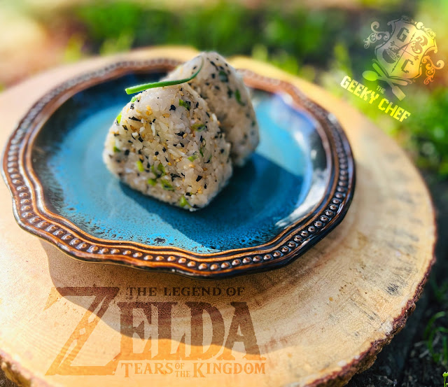

Veggie Riceballs
Veggie Riceballs

Description
This recipe is for the Veggie Rice Balls from both BotW and TotK. They seem to be a specialty of everyone's favorite sign-holder and President Hudson supporter, Addison. The most basic version of these is made using just Hylian Rice and Hyrule Herb but there are many combinations that yield these tasty-looking snacks.
Ingredients
- rice
- green onions
- furikake
- sesame seeds
- soy sauce
- peas
- parsley
- lettuce leaf
Steps
- Make sake sure all your veggies and herbs are dry, too much additional moisture could make the rice too soggy to shape.
- In a small mixing bowl, mix together the rice, green onions, furikake (both kinds, if using), gomasio, ponzu and any additional veggies or herbs. Everything should be very sticky. If it's not sticking together, you may need to add more rice.
- For easier forming, use slightly damp onigiri rice molds to create the rounded triangular shape and use according to product directions. This will make 2-4 rice balls, depending on the size of the mold. If you are new to the joy of rice balls and don't have the molds, place a small bowl of warm, lightly salted water on your work station. Wet your hands in the water, and separate the rice into 2-4 equal portions. Using damp hands, gently mold the rice into the rounded triangular shape, wetting your hands as needed. You can also wrap the rice portions in plastic wrap before shaping them and they will appear a bit more even, although the in-game version is pretty imperfect-looking so this is optional.
- Set a shiso leaf or a leaf of lettuce down on a serving plate. Plate two rice balls on top of the leaf and garnish one with an herb sprig of your choice. Repeat once more if you made four rice balls instead of two. Serve!